Code
library(readxl)
data <- read_excel("/home/nils/dev/mscids-notes/fs26/dq/data/HSE.xlsx")
boxplot(wtval ~ sex, data = data)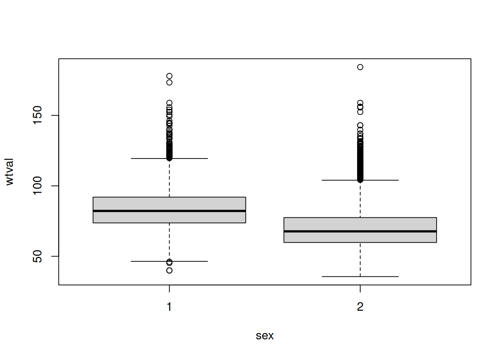
Data quality describes data characteristics at the meta-level. High-quality data provides a reliable and useful structure for information. Conversely, poor data quality can lead to mistrust and inaccurate outcomes.
Note: Personal definition.
Scenario 2: E-Commerce – Inventory Management
Incomplete data can lead to a misunderstanding of consumer behavior and purchasing patterns. Without a full picture, businesses may fail to identify emerging trends or customer needs.
Inaccurate data can result in supply chain bottlenecks or an oversupply of products. This leads to either lost sales due to stockouts or increased storage costs due to excess inventory.
A lack of real-time data availability undermines trust in data-driven processes. If stakeholders cannot access information when needed, they may revert to “gut-feeling” decisions, which are prone to error.
To support effective inventory management, data must meet specific quality standards, such as:
Note: The answers are not disjunct.
| id | last_name | first_name | age | department | function | salary | commision_rate |
|---|---|---|---|---|---|---|---|
| 1 | Smith | Bill | 56 | Sales | Head of Sales | 120.000 | 15% |
| 2 | Muller | John | 25 | Social Media | Creative Director | 100.000 | N/A |
| 3 | Grey | Anna | 37 | SEO | Google Expert | 90.000 | N/A |
| 4 | Berger | Lia | 22 | NULL | Freelancer | NULL | |
| 5 | ? | Mike | 46 | Facility | Team Manager | 75.000 | N/A |
| 6 | Doe | Jane | 30 | IT | Dev | N/A | NaN |
last_name of Mike (ID 5). Every person has a last_name, but it is currently missing from the dataset.department of Lia (ID 4). As an external freelancer, she is not part of the internal organizational structure.salary of Jane (ID 6). It is unclear if she is a paid employee or an unpaid volunteer/intern; thus, the existence of the attribute itself is in question.commision_rate for non-sales employees. This metric is only defined for sales roles and is fundamentally inapplicable to other functions.salary of Lia (ID 4). As a freelancer, the field remains empty until a specific hourly-based invoice or contract condition triggers the entry.Using R, generate a boxplot broken down by gender (variable sex). How can the boxplot be interpreted?
library(readxl)
data <- read_excel("/home/nils/dev/mscids-notes/fs26/dq/data/HSE.xlsx")
boxplot(wtval ~ sex, data = data)
We can clearly se a difference between the two classes.
What are the distributions of the following boxplots?
if (!require("naniar")) install.packages("naniar", dependencies=TRUE)Loading required package: naniarif (!require("mice")) install.packages("mice", dependencies=TRUE)Loading required package: mice
Attaching package: 'mice'The following object is masked from 'package:stats':
filterThe following objects are masked from 'package:base':
cbind, rbindlibrary(naniar)
library(mice)
head(airquality) Ozone Solar.R Wind Temp Month Day
1 41 190 7.4 67 5 1
2 36 118 8.0 72 5 2
3 12 149 12.6 74 5 3
4 18 313 11.5 62 5 4
5 NA NA 14.3 56 5 5
6 28 NA 14.9 66 5 6# Missing pattern
md.pattern(airquality)
Wind Temp Month Day Solar.R Ozone
111 1 1 1 1 1 1 0
35 1 1 1 1 1 0 1
5 1 1 1 1 0 1 1
2 1 1 1 1 0 0 2
0 0 0 0 7 37 44# Little’s test
mcar_test(airquality)# A tibble: 1 × 4
statistic df p.value missing.patterns
<dbl> <dbl> <dbl> <int>
1 35.1 14 0.00142 4if (!require("readxl")) install.packages("readxl", dependencies=TRUE)
if (!require("tidyverse")) install.packages("tidyverse", dependencies=TRUE)Loading required package: tidyverse── Attaching core tidyverse packages ──────────────────────── tidyverse 2.0.0 ──
✔ dplyr 1.1.4 ✔ readr 2.1.6
✔ forcats 1.0.1 ✔ stringr 1.6.0
✔ ggplot2 4.0.1 ✔ tibble 3.3.1
✔ lubridate 1.9.4 ✔ tidyr 1.3.2
✔ purrr 1.2.1
── Conflicts ────────────────────────────────────────── tidyverse_conflicts() ──
✖ purrr::%||%() masks base::%||%()
✖ dplyr::filter() masks mice::filter(), stats::filter()
✖ dplyr::lag() masks stats::lag()
ℹ Use the conflicted package (<http://conflicted.r-lib.org/>) to force all conflicts to become errorsif (!require("mice")) install.packages("mice", dependencies=TRUE)
library(readxl)
library(mice)
library(tidyverse)
data <- read_excel("/home/nils/dev/mscids-notes/fs26/dq/data/grades.xlsx")
# Missing pattern
md.pattern(data)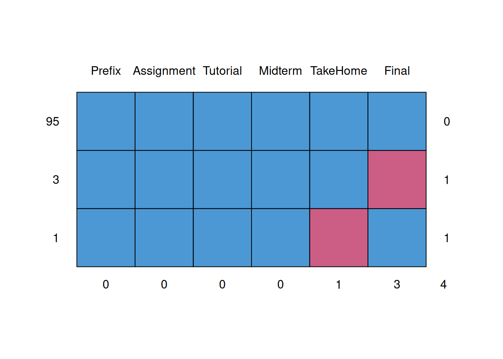
Prefix Assignment Tutorial Midterm TakeHome Final
95 1 1 1 1 1 1 0
3 1 1 1 1 1 0 1
1 1 1 1 1 0 1 1
0 0 0 0 1 3 4data <- data %>%
mutate(
Final = replace_na(Final, mean(Final, na.rm = TRUE)),
TakeHome = replace_na(TakeHome, mean(TakeHome, na.rm = TRUE))
)
# Missing pattern after replace
md.pattern(data) /\ /\
{ `---' }
{ O O }
==> V <== No need for mice. This data set is completely observed.
\ \|/ /
`-----'
Prefix Assignment Tutorial Midterm TakeHome Final
99 1 1 1 1 1 1 0
0 0 0 0 0 0 0OR
if (!require("readxl")) install.packages("readxl", dependencies=TRUE)
if (!require("mice")) install.packages("mice", dependencies=TRUE)
library(readxl)
library(mice)
data <- read_excel("/home/nils/dev/mscids-notes/fs26/dq/data/grades.xlsx")
# Missing pattern
md.pattern(data)
Prefix Assignment Tutorial Midterm TakeHome Final
95 1 1 1 1 1 1 0
3 1 1 1 1 1 0 1
1 1 1 1 1 0 1 1
0 0 0 0 1 3 4imp_model <- mice(data, method="mean", m=1, maxit=1)
iter imp variable
1 1 TakeHome Finaldata_complete <- complete(imp_model)
# Missing pattern
md.pattern(data_complete) /\ /\
{ `---' }
{ O O }
==> V <== No need for mice. This data set is completely observed.
\ \|/ /
`-----'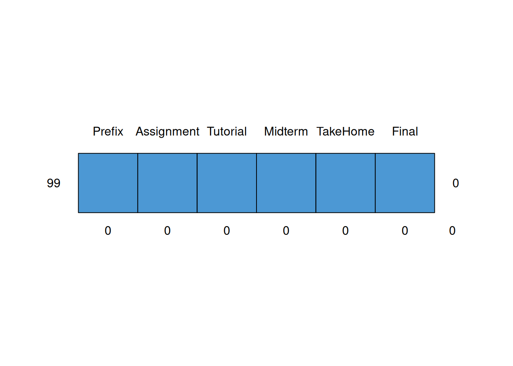
Prefix Assignment Tutorial Midterm TakeHome Final
99 1 1 1 1 1 1 0
0 0 0 0 0 0 0| Mechanism | Summary |
|---|---|
| MCAR | A random “glitch” in the system. |
| MAR | Predictable based on other info you have. |
| MNAR | The “hidden” value is the reason it’s missing. |
if (!require("readxl")) install.packages("readxl", dependencies=TRUE)
if (!require("dplyr")) install.packages("dplyr", dependencies=TRUE)
library(readxl)
library(dplyr)
data <- read_excel("/home/nils/dev/mscids-notes/fs26/dq/data/HSE.xlsx")
data# A tibble: 13,908 × 2
wtval sex
<dbl> <dbl>
1 85.2 1
2 72.7 1
3 84.8 1
4 73.6 1
5 61.3 1
6 81.9 1
7 60 1
8 NA 1
9 NA 1
10 123. 1
# ℹ 13,898 more rowsdata.M <- data %>% filter(sex == 1)
data.F <- data %>% filter(sex == 2)hist(data.M$wtval)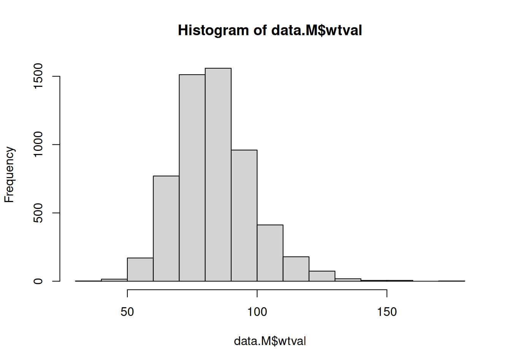
boxplot(data.M$wtval)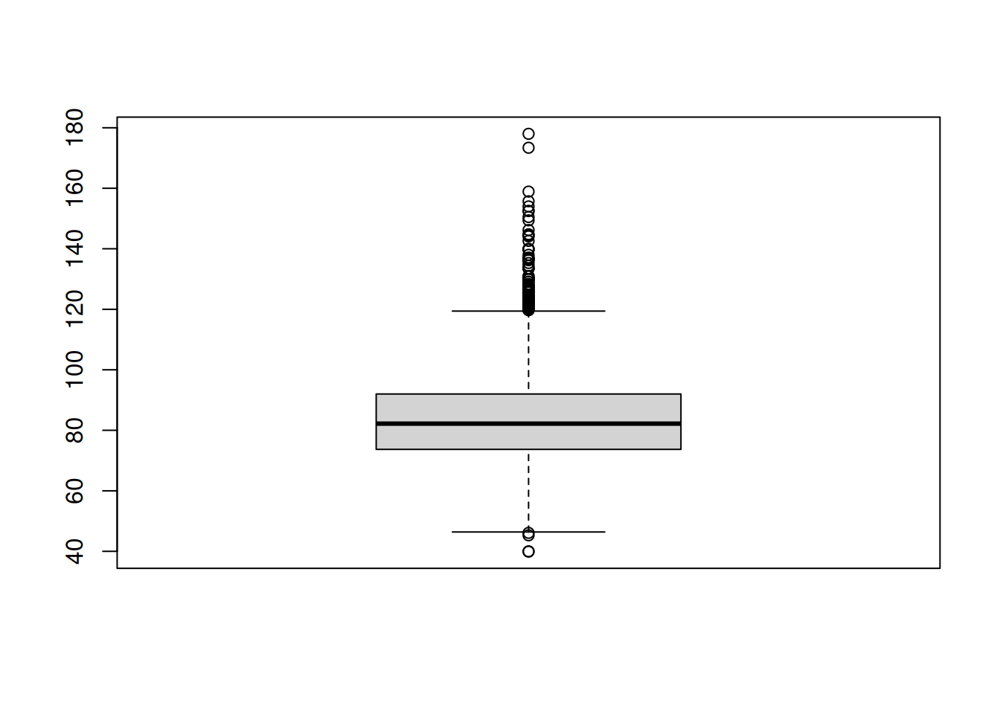
# Calculate thresholds (removing NA values is crucial here)
lower_bound <- quantile(data.M$wtval, 0.01, na.rm = TRUE)
upper_bound <- quantile(data.M$wtval, 0.99, na.rm = TRUE)
print(lower_bound) 1%
55.384 print(upper_bound) 99%
125.716 if (!require("dplyr")) install.packages("dplyr", dependencies=TRUE)
library(dplyr)
z_score_data <- data.M %>%
mutate(
z_score = (
wtval - mean(wtval, na.rm = TRUE)) / sd(wtval, na.rm = TRUE)) %>%
filter(abs(z_score) <= 5)
z_score_data# A tibble: 5,682 × 3
wtval sex z_score
<dbl> <dbl> <dbl>
1 85.2 1 0.105
2 72.7 1 -0.742
3 84.8 1 0.0779
4 73.6 1 -0.681
5 61.3 1 -1.52
6 81.9 1 -0.119
7 60 1 -1.60
8 123. 1 2.69
9 98.4 1 1.000
10 73.3 1 -0.702
# ℹ 5,672 more rowsif (!require("readxl")) install.packages("readxl", dependencies=TRUE)
if (!require("outliers")) install.packages("outliers", dependencies=TRUE)Loading required package: outlierslibrary(readxl)
library(outliers)
data <- read_excel("/home/nils/dev/mscids-notes/fs26/dq/data/HSE.xlsx")
# Grubbs' test for the maximum value
grubbs_result <- grubbs.test(data$wtval)
print(grubbs_result)
Grubbs test for one outlier
data: data$wtval
G = 6.61164, U = 0.99651, p-value = 2.29e-07
alternative hypothesis: highest value 184.3 is an outlierif (!require("EnvStats")) install.packages("EnvStats", dependencies=TRUE)Loading required package: EnvStats
Attaching package: 'EnvStats'The following objects are masked from 'package:stats':
predict, predict.lmThe following object is masked from 'package:base':
print.defaultlibrary(EnvStats)
# Rosner's test checking for up to 10 potential outliers
rosner_result <- rosnerTest(data$wtval, k = 10)Warning in rosnerTest(data$wtval, k = 10): 1389 observations with NA/NaN/Inf in
'x' removed.print(rosner_result$all.stats) i Mean.i SD.i Value Obs.Num R.i+1 lambda.i+1 Outlier
1 0 76.28451 16.33717 184.3 12420 6.611640 4.609832 TRUE
2 1 76.27588 16.30927 178.0 5562 6.237196 4.609815 TRUE
3 2 76.26776 16.28455 173.4 4618 5.964685 4.609798 TRUE
4 3 76.26000 16.26204 158.9 3876 5.081773 4.609782 TRUE
5 4 76.25339 16.24590 158.9 6366 5.087228 4.609765 TRUE
6 5 76.24679 16.22974 156.2 13068 4.926339 4.609748 TRUE
7 6 76.24040 16.21464 155.7 5196 4.900485 4.609731 TRUE
8 7 76.23405 16.19972 155.7 8309 4.905391 4.609715 TRUE
9 8 76.22770 16.18478 154.0 1929 4.805274 4.609698 TRUE
10 9 76.22148 16.17048 152.5 3223 4.717146 4.609681 TRUEif (!require("readxl")) install.packages("readxl", dependencies=TRUE)
if (!require("MVA")) install.packages("MVA", dependencies=TRUE)Loading required package: MVALoading required package: HSAUR2Loading required package: tools
Attaching package: 'HSAUR2'The following object is masked from 'package:tidyr':
householdThe following object is masked from 'package:mice':
toenailif (!require("cluster")) install.packages("cluster", dependencies=TRUE)Loading required package: clusterlibrary(readxl)
library(MVA)
library(cluster)
data <- read_excel("/home/nils/dev/mscids-notes/fs26/dq/data/data_extreme.xlsx")
head(data)# A tibble: 6 × 2
age spend
<dbl> <dbl>
1 18 10
2 21 11
3 22 22
4 24 15
5 26 12
6 26 86data# A tibble: 20 × 2
age spend
<dbl> <dbl>
1 18 10
2 21 11
3 22 22
4 24 15
5 26 12
6 26 86
7 27 14
8 30 88
9 31 39
10 35 37
11 39 44
12 40 27
13 41 29
14 42 20
15 44 28
16 46 21
17 47 30
18 48 31
19 49 23
20 54 24plot(data)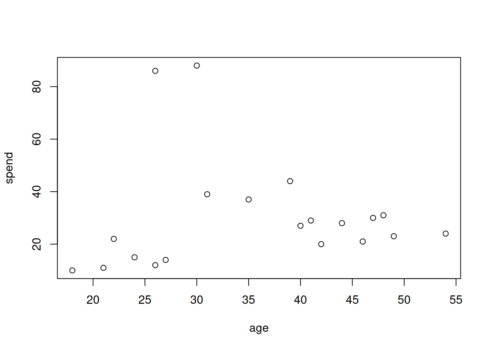
boxplot(data)datas <- scale(data, center = FALSE, scale = TRUE)
boxplot(datas)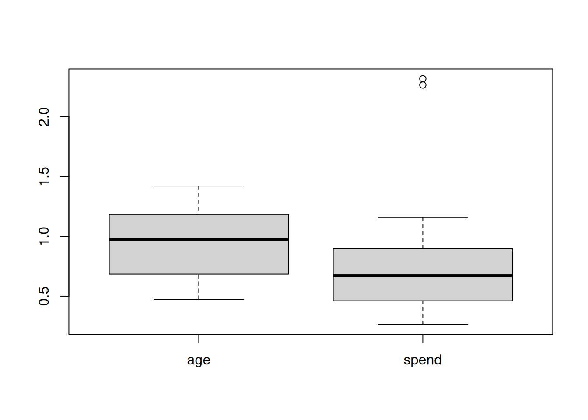
plot(datas)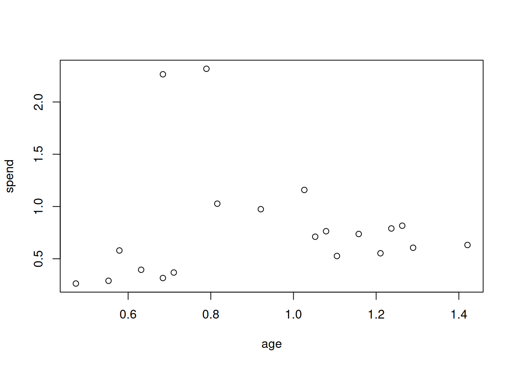
dists <- dist(datas)
km <- kmeans(datas, centers = 4, nstart = 10)
groups_km <- km$cluster
groups_km [1] 1 1 1 1 1 2 1 2 4 4 4 3 3 3 3 3 3 3 3 3cluster_size <- cbind(sum(groups_km == 1), sum(groups_km == 2), sum(groups_km == 3), sum(groups_km == 4))
cluster_size [,1] [,2] [,3] [,4]
[1,] 6 2 9 3plot(datas, pch = groups_km, col=groups_km, lwd=2)
legend("topright", legend = 1:4, pch = 1:4, col=1:4, bty="n")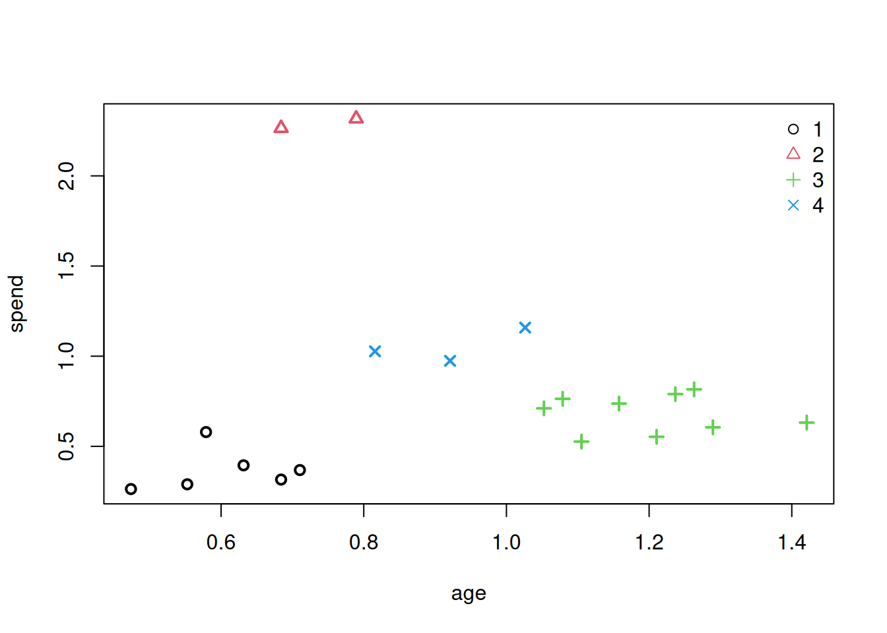
reps <- rep(0, 6)
for (i in 1:6) reps[i] <- sum(kmeans(datas, centers = i, nstart = 20)$withinss)
par(mfrow = c(1,1))
plot(1:6, reps, type = "b", xlab = "Number of groups", ylab = "Sum of squares")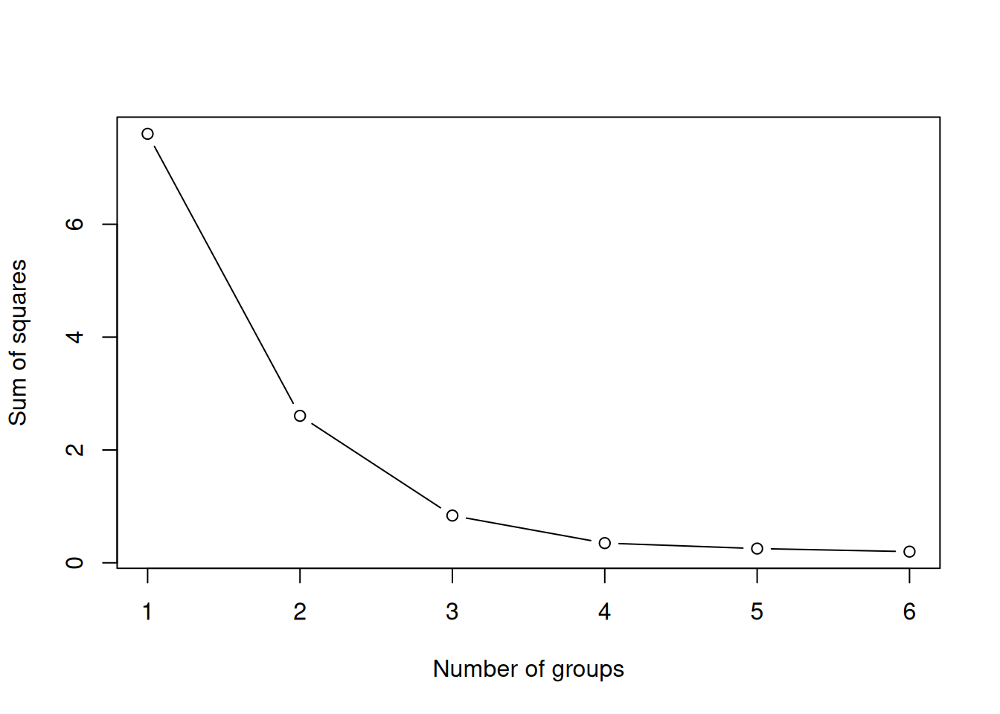
plot(silhouette(groups_km, dists))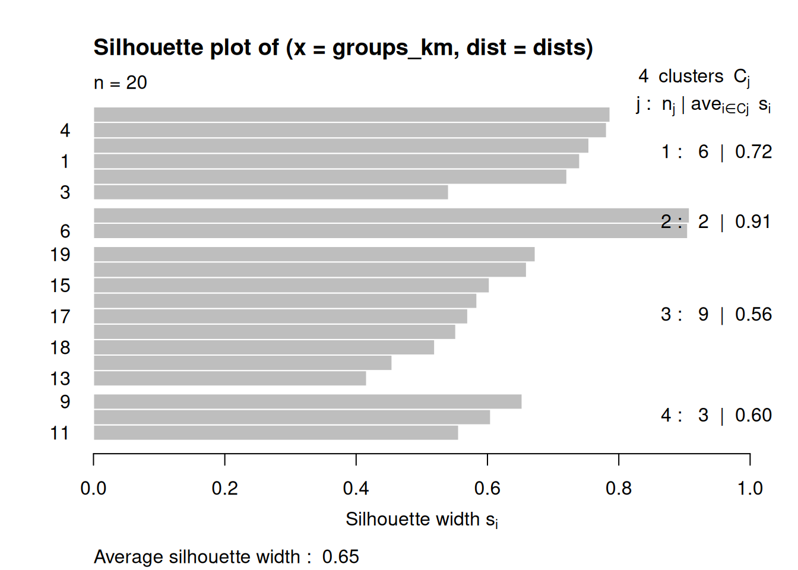